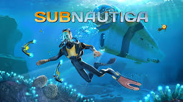

Subnautica - комп'ютерна гра в жанрах пригодницької гри та симулятора виживання з відкритим світом , розроблена інді-студією Unknown Worlds Entertainment . У Subnautica гравець може вільно досліджувати океан іншої планети, керуючи персонажем-одинаком - єдиним, що вижив при аварії космічного корабля «Аврора»; Більшість дії гри проходить під водою
